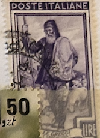
| SOURCE | TITLE| IMAGE MATCH | click to source page |
| eBay | Italy Scott #562 Mint Never Hinged | eBay | 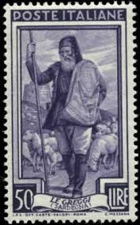 |
| Find Your Stamps Value | Value of poste italiane le greggi 50 lire stamps | 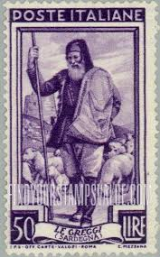 |
| eBay UK | Italy Sheep Farm in Sardinia Island stamp 1950 | eBay UK | 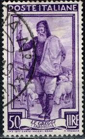 |
| Mezzo Secolo di Repubblica | Italy at work Series – Half a Century of Italian Republic | 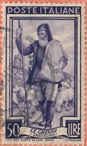 |
| Todocolección | sello poste republica italiane, le gregg 50 lir - Buy Antique stamps of Italy on todocoleccion | 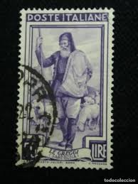 |
| European Stamp Society (EuropeanStampSociety) - Perfil | Pinterest | 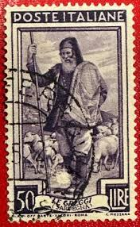 | |
| Alamy | Sardegna, flock, shepherd, postage stamp, Italy, 1950 Stock Photo - Alamy | 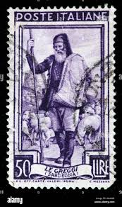 |
| Shutterstock | 2+ Thousand Italian Post Office Royalty-Free Images, Stock Photos & Pictures | Shutterstock | 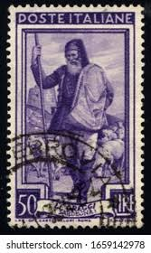 |
| iStock | Postage Stamp Printed In Brazil Shows Face Of Jesus From Shroud Of Turin Sagrada Face 1966 Stock Photo - Download Image Now - iStock | 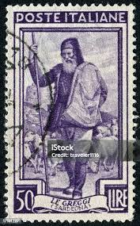 |
| Shutterstock | Italy 1950: Over 1,440 Royalty-Free Licensable Stock Photos | Shutterstock |  |
| Shutterstock | Korea Circa 1978 Stamp Printed North Stock Photo 125875307 | Shutterstock | 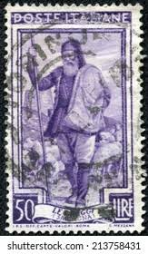 |
| Shutterstock | 4+ Thousand 1950 Man Royalty-Free Images, Stock Photos & Pictures | Shutterstock | 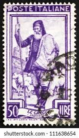 |
| Alamy | ITALY - CIRCA 1950: A stamp printed in Italy, shows the Woodcutter, the background Vajolet Towers (South Tyrol), circa 1950 Stock Photo - Alamy | 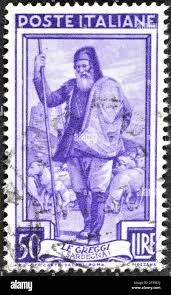 |
| Shutterstock | Sheep Stamp: Over 1,134 Royalty-Free Licensable Stock Photos | Shutterstock | 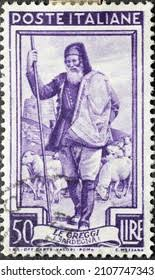 |
| eBay | Work Lire 50 wheel III. type in SB position | eBay | 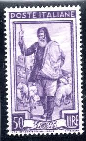 |
| iStock | Italian Postage Stamp Featuring Sardegna Stock Photo - Download Image Now - Art, Arts Culture and Entertainment, Communication - iStock | 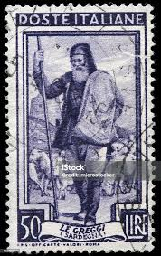 |
| Shutterstock | 4+ Thousand 1950 Man Royalty-Free Images, Stock Photos & Pictures | Shutterstock | 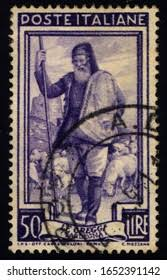 |
| Dreamstime.com | 505 Vintage Shepherd Sheep Stock Photos - Free & Royalty-Free Stock Photos from Dreamstime | 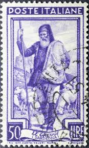 |
| iStock | 60+ Sardinia Shepherd Stock Photos, Pictures & Royalty-Free Images - iStock | 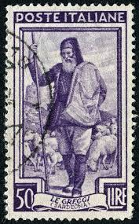 |
| Find Your Stamps Value | Paintings: “Amazon,” by Piotr Michalowski 30g Gold & multicolored stamp price, value | 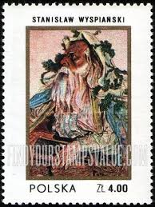 |
| DeqiStamps.com | Russia USSR postage stamps year 1939 New York Exhibition set | 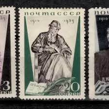 |
| eBay | Russie An 1935,Sc 577-79,Mi 536A-38A,MNH,PERF.14,Leo Tolstoï,Sombre Ombre,Signé | eBay | 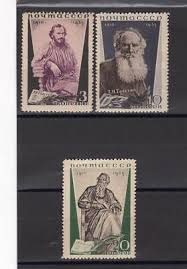 |
| Cherrystone Auctions | Russian Stamps (Internet Only) - May 16, 2012 - SOVIET UNION 1935 Issues | 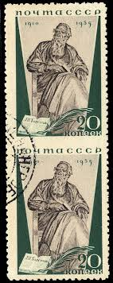 |
| eBay.de | ad8768 - SAN MARINO - POSTAL HISTORY - Maximum Card - 1950 | eBay.de | 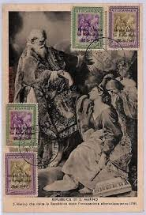 |
| eBay | IRELAND, Scott #418-419: Complete Set, MNH, 1977 Anniversaries | eBay | 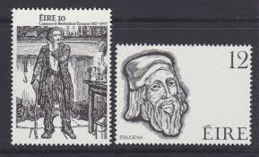 |
| eBay | Russia 1935 Lev Tolstoy,Russian Writer,Sculpture,Ginsburg,M.536-8,Perf.11,14,MLH | eBay | 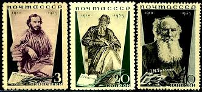 |
| eBay | Russia stamp 579 mint hinged | eBay | 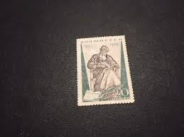 |
| eBay | Greece. 200 years from Birth Karaiskakis 1982 MNH, Karaiskakis in Piraeus, Greek | eBay | 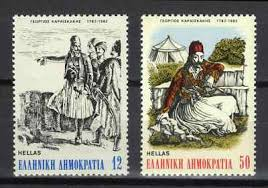 |
| eBay | USSR. Russia 1935. L. Tolstoy. Missing perforation at the top. Rare error. | eBay | 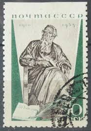 |
| Russian Philately | 1962 Sc 2667. 150 anniversary since the birth of Mirza Fatali Akhundov. Scott 2654 for sale at Russian Philately | 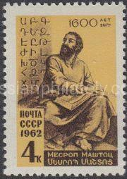 |
| sellosmundo.com | Alonso de Berruguete - Apostle. Spain Europe ref. 273161 | 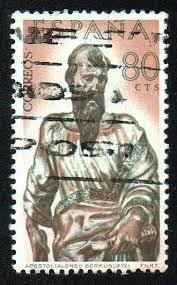 |
| eBay | Italy 673 wmk 303,hinged.Mi 931. Italy at work,1955.Shepherd and flock. | eBay | 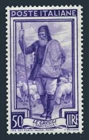 |
| eBay | Russia Famous Printer Ivan Fedorov stamp 1983 B-6 | eBay | 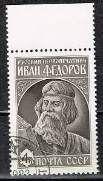 |
| eBay | Niue 2006 - Painter Rembrandt Art - Set of 4 Stamps - Scott #817-20 - MNH | eBay | 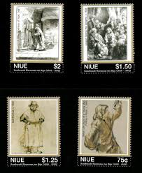 |
| eBay | UAE AJMAN 1971 ALBRECHT DURER 500 ANNIVERSARY BEAUTIFUL PAINTING 8 STAMPS MNH | eBay | 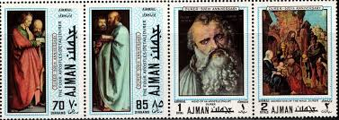 |
| eBay | Tolstoi stamp set, used, VF, Soviet Union/Russia, 1935, line perforation 14 | eBay | 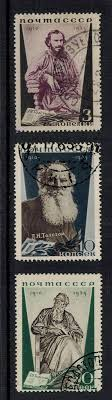 |
| eBay | D327867 Spain FDC Raimundo Lulio | eBay | 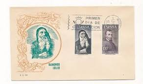 |
| eBay | Russia Soviet Union stamps 1983 Ivan Fyodorov | eBay | 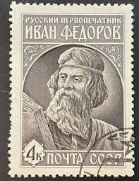 |
| Etsy | Postage Stamps. Vintage Uncanceled Stamps of the USSR 1983. History of the USSR in Miniature. - Etsy | 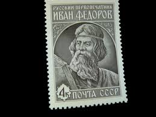 |
| eBay | Greece 1982 Scott #1432-1433 MNH George Karaiskakis | eBay | 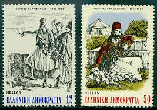 |
| eBay | B&D: 1935 Russia Scott 577-579 Tolstoy MNH/MLH | eBay | 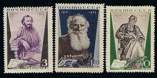 |
| eBay | RUSSIA,USSR:1983 SC#5194 MNH I. Fedorov, first Russian printer, 400th deat Z491 | eBay | 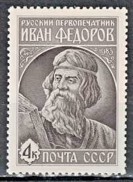 |
| Tunisia Stamps | Stamp N°1133 | 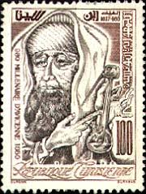 |
| eBay | Ireland Scott #418-19, Singles 1977 Complete Set FVF MNH | eBay | 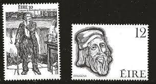 |
| Shutterstock | 8+ Hundred Bulgaria Sofia Stamp Royalty-Free Images, Stock Photos & Pictures | Shutterstock | 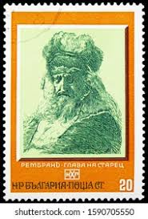 |
| eBay | 5324 - RUSSIA 1983 - Ivan Fedorov - Printer - MNH Set | eBay | 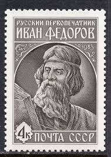 |
| eBay | Postage stamp of the USSR 1965 80th anniversary of the birth of the Gerasimov | eBay | 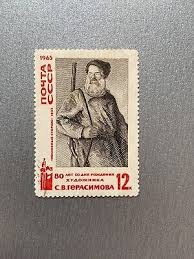 |
| eBay | Portuguese India Famous Navigator Alfonso Albuquerque stamp 1930 AS | eBay | 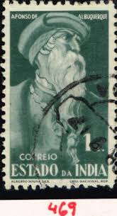 |
| eBay | 1995 Armenia Baptism of Armenian People Full Sheet of 20 Mint NH Stamps | eBay | 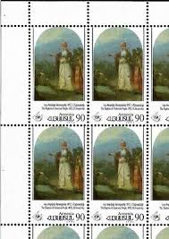 |
| eBay | Russia 1962 BISHOP MESROB MNH SC 2601 | eBay | 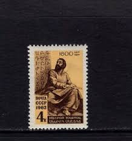 |
| eBay | Russia 2601, MNH. Bishop Mesrob, author Armenian-Georgian alphabets. 1962. | eBay | |
| eBay | Russia USSR 1962 SC 2601 MNH and used . f4866 | eBay | |
| Etsy | Ivan Fyodorov Postage Stamp - Soviet Vintage First Russian Printer Ivan Fyodorov of Moscow Postage Stamp Issued in USSR in 1983 - Etsy | |
| DeqiStamps.com | Russia USSR postage stamps year 1935 Leo Tolstoy set | |
| eBay | Russia✔️Sc.577-9. Zv.433A-5A.Leo Tolstoy,full set of3,perf.14. MLHOG. CV$40+ | eBay | |
| valelifesciences.com | Romanian Multiple Topical Postal Stamps For Sale | |
| eBay | Russia/ USSR 1935 ☀ Death Anniversary of L. N. Tolstoi ☀ MH set | eBay | |
| HipStamp | Bulgaria Stamp:1975-Sc#2248-53 World Graphics Exhibition Stamps MNH SET. VF | Europe - Bulgaria, General Issue Stamp / HipStamp | |
| eBay | Russia 1965 The Kolkhoz guard, Gerasimov painting, Mi.3166II,MNH Variety,signed | eBay |